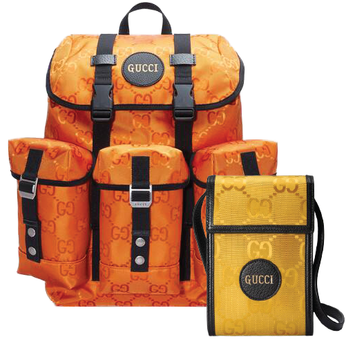
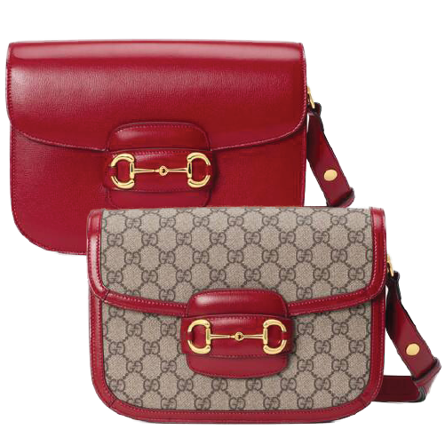
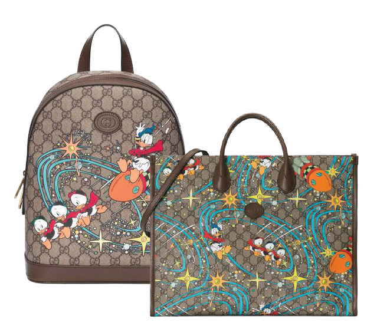

A product that reflects the possibilities well. The first collection of the Gucci Circular Line, Gucci Off the Grid was created to reflect the house's vision of productivity.

The Gucci Horsebit 1955 handbag to be featured in the 2020 Cruise collection. It is a product that highlights a hose comb that incorporates traditional details and contemporary sensibility, using lines and shapes that were first introduced about 60 years ago.

Disney's signature characters enrich the story of the house and add a nifty sensibility to Donald Duck Gucci's iconic shape and design.
Donald Duck's nephews Huey, Dewey and Louis have been added to the design together to add vitality to the tote bag.
과거를 새롭게 재해석한다는 가치 아래에 헤리티지, 장인정신, 기술혁신과
트렌디함이라는 대조적인 요소들을 조화롭게 융합시켜 전달하고 있습니다.
사용하는 대표 로고에서 브랜드명 GUCCI를 대문자로 표기
1933년 창립자 구찌오 구찌(Guccio Gucci)의 아들 중 한 명이었던 알도 구찌(Aldo Gucci)가 만든 '더블-지(Double-G)'심볼을 함께 사용
두 개의 알파벳 G를 마주 보게 겹쳐 놓은 이 모노그램은 구찌오 구찌의 이니셜
삼마 소재로 개발한 디아만테(Diamante) 프린트는 작은 다이아몬드 형태가 서로 연결되는 모양을 직조한 캔버스이다. 그리고 승마용품 중 말의 안장을 묶는 끈에서 영감을 받은 GRG 웹(Green-Red-Green으로 이어진 3색 줄무늬)과 홀스빗(Horsebit) 장식 등이 구찌의 시그니처 심볼로 인식
1950년대부터는 부호뿐만 아니라 톱스타들이 구찌 로마 매장을 자주 방문하기 시작
1995년부터 2004년까지는 톰 포드(Tom Ford)가 구찌 컬렉션
톰 포드는 광고를 통해 동성애와 같은 섹슈얼한 주제를 다루면서 구찌를 이슈화 또한, 여성에 대한 고정관념을 배제하고 새로운 관능미를 강조하면서도 고급스러운 구찌의 이미지를 연출
구찌는 기업의 사회적 책임(Corporate Social Responsibility)을 중요한 가치로 여긴다. 그래서 '지속가능한 가치(Sustainable Value)'를 경영 원동력으로 삼고 사업 윤리, 인권 존중 및 소비자 관계를 끊임없이 고려한다. 구찌는 직원의 권리를 보호하고 공평한 기회를 제공하며, 이해관계자와 공급업체를 존중하는 문화를 만들기 위해 노력
Gucci Galleria in Gwanggyo
Gucci flagship in cheongdam
Gucci 롯데 백화점 본점
Gucci 신세계 백화점 in gangnam
FAQ 자주 묻는 질문모음에서 찾아보세요
구찌 공식 온라인 스토어에 원하는 상품이나 사이즈가 없는 경우, 상품 설명 페이지의 매장 찾기 기능을 이용하여 가까운 구찌 매장을 방문하시면 상품을 만나보실 수 있습니다.
추가적인 도움이 필요한 경우 구찌 코리아 클라이언트 서비스센터로 문의해 주세요.
구찌는 최고 품질의 소재 및 디자인으로 제작됩니다. 대부분의 상품은 이탈리아에서 제작되며, 시계는 스위스, 향수는 프랑스 또는 영국, 화장품은 유럽, 일부 아이웨어 상품은 일본에서 생산됩니다.
구찌는 사회적 환경적 책임과 사명감을 가지고 우수한 기술과 품질을 보장할 수 있도록 지속 가능한 재료와 제작 공정을 끊임없이 모색합니다. 구찌 이퀼리브리엄(Gucci Equilibrium)을 보시면 구찌가 추구하는 지속 가능성에 대해 더욱 자세히 보실 수 있습니다.
주문 제작 상품(Made to Order)은 주문이 완료된 후 맞춤 제작되는 상품입니다. 주문이 들어오면 구찌 클라이언트 어드바이저가 고객님께 연락하여 주문의 상세 내역을 확인 후 고객님만을 위한 상품이 제작됩니다.
암체어 및 스툴, 병풍 등 데코 컬렉션의 가구도 주문 제작 상품(Made to Order)에 포함됩니다.
해당 상품의 경우, 주문이 완료된 후에는 주문 취소나 수정, 교환 및 반품이 불가합니다.
위조된 구찌 상품들 혹은 의심되는 웹사이트를 발견하셨다면, 다음의 이메일 주소로 신고해 주시기 바랍니다.
(이메일 주소: counterfeit@gucci.com) 그리고 상품 혹은 웹사이트에 대해, 예를 들어 상품의 판매장소, 상품 판매업자, 상품의 종류, 웹사이트의 주소 등과 같은 자세한 정보와 함께 전달해 주시면 감사하겠습니다.
기타 문의사항은 고객센터에 문의주세요